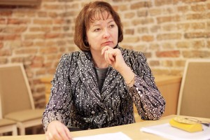

 Ar Svētās Trīsvienības baznīcas torņa atklāšanu Jelgava tūrisma jomā piedzīvojusi tādu kā atdzimšanu, jo pilsēta ir atguvusi vienu no saviem simboliem. Turklāt ik gadu tiek sakārtots vēl kāds objekts, kurš varētu būt uzmanības vērts ne tikai jelgavniekiem, bet arī pilsētas viesiem.
Jautājums: Kādas ir apmeklētāju pirmās atsauksmes par torni?
Interese par torni ir liela – nedēļas nogalēs vien mūs apmeklē vidēji 400 cilvēki. Viņiem patīk gan ekspozīcijas, gan skatu laukums, kurā var aplūkot pilsētas panorāmu. Atšķirībā no tradicionālajām vēstures ekspozīcijām pie mums cilvēki visu var aptaustīt un ar tehnoloģiju starpniecību daudz niansētāk izjust pilsētas vēsturi. Vieni atzīst, ka neko tādu nav redzējuši, citi – ka tas jau ir Eiropas līmenis. Ir apmeklētāji, kas nāk atkārtoti, lai rūpīgāk iepazītos ar ekspozīciju saturu. Daži pat pavada šeit vairākas stundas, jo apmeklējuma ilgums nav ierobežots.
Jautājums: Kādas izmaiņas līdz ar centra izveidi jūs redzat, lai Jelgava no tūristu viedokļa nebūtu tikai vieta starp Rīgu un Rundāli?
Jau tas vien, ka tūristu grupas no Rīgas uz Rundāli dodas caur Jelgavu, nevis Bausku, ir labi, jo mēs jau esam iekļauti tūrisma maršrutos. Tagad tikai pakāpeniski jāpanāk, lai šie cilvēki Jelgavā uzkavētos ilgāk. Sadarbībā ar Jelgavas un Ozolnieku novadu veidojam piedāvājumu, kurš varētu ieinteresēt potenciālos tūristus. Sākumā tā varētu būt divu trīs stundu ekskursija pa pilsētas un novadu ievērojamākajiem objektiem, bet vēlāk varētu piedāvāt arī dienas programmu. Lielā mērā gan tas būs atkarīgs no tūrisma operatoriem jeb uzņēmējiem, vai spēsim piedāvāt ko oriģinālu, jo tūrisma nozarē visu laiku gaida kaut ko jaunu un nebijušu. Šī ir mūsu iespēja, kura jāizmanto.
Jautājums: Kā plānojat piesaistīt ārvalstu tūristus?
Viena no iespējām ir sadarboties ar Jelgavas sadraudzības pilsētām, īpaši Šauļiem un Pērnavu. Labprāt uzņemsim arī ārvalstu žurnālistus, kuru vizītes Latvijā organizē TAVA. Uzrunāsim starptautiskos tūrisma operatorus. Plānojam sagatavot informatīvos materiālus svešvalodās, tai skaitā mājas lapu www.tornis.jelgava.lv, kura ir izstrādes stadijā.
Jelgavas Svētās Trīsvienības baznīcas tornis
Sv. Trīsvienības baznīca bija viena no pirmajām luterāņu draudzes mūra baznīcām, kura tika uzcelta Eiropā, turklāt, baznīca uzskatāma arī par pirmo mūra celtni Jelgavā
Tornis ziemā
Skats uz torni
Torņā iekšskats
Torņa pulkstenis